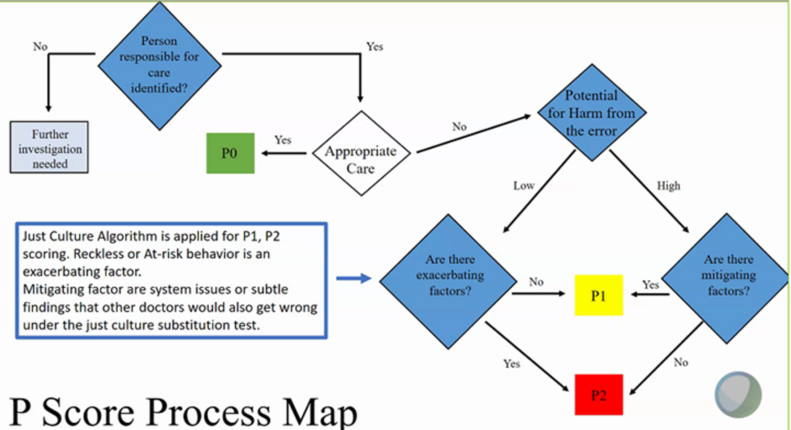

3 Physician Operations
3.1 Launch remote session
- Click on the Epic pull-down menu on the left upper corner
- Select Launch Sessions
- Click on the magnification glass to select the session to launch
Each session has a designated two-letter code. Use the following table to find the session for the hospital to launch:
| Hospital ID | Hospital Location | Session Code |
|---|---|---|
| 954 | Downey | TC |
| 197 | LAMC | ML |
| 200 | SDMC | SD |
| 337 | OCMC - Anaheim | OC |
| 393 | Panorama City | VA |
| 391 | Baldwin Park | TC |
| 199 | Fontana | IE |
| 338 | West LA | ML |
| 201 | Wooden Hill | VA |
| 392 | Riverside | IE |
| 400 | South Bay | TC |
| 893 | OC - Irvine | OC |
| 1072 | Ontario | IE |
| 1433 | MoVal | IE |
3.2 Census and extra duty
- < 7 patients: no extra duty
- 8-11 patients: 0.5W
- ≥12 patients: 1W
3.3 Secure Chat
Secure Chat can be accessed inside Health Connect. Instructions as follows:

3.4 Daily Rounds Process
Checklist
- NICU accordion summary
- Review labs
- Review meds
- Review growth and flowsheet
- Revise the problem list
- Orders
- E&M coding
- Progress note
- Call parents to provide update, or update at bedside
3.5 Quality Management
P-score process map

Important notes:
- P scoring is based on POTENTIAL FOR HARM.
- P2 is the serious and will require corrective actions.
- If you receive P2, you can appeal and ask for independent review.
- Standard for care = is the COMMUNITY STANDARD, not department standard.
- It’s ok to discuss the case with the physician under review to get their thought process.
- Any learning experience will be shared to the Neo group without naming the physician under review.
- Any request for case review can be submitted to me or directly to QM regardless of department, e.g radiology, nursing, peds etc.
References
Click to Download Peer Preview Training Slides
Click to Download Level 3 Audits Pearls & Tips
3.6 Interdepartmental Agreements
Escalation process
Each agreement is reviewed on a yearly basis by its agreement owners. Non-compliance with an agreement is escalated on a case-by-case basis and in real time, per the Patient Care Issue Resolution Process:
| Step | Action |
|---|---|
| Service issue (peer-to-peer) | Have a conversation with physician or peer (involve a manager if you need to) |
| Resolution Level 1 | Involve Manager or Director |
| Resolution Level 2 | Involve Physician Leader, Physician-in-Charge, or Chief |
| Resolution Level 3 | Involve AAMD, Area Administrator, or COO |
| Resolution Level 4 | Involve AMD, CAO, or Executive Director |
Radiology
Service Level Agreement (SLA), Riverside Medical Center. Agreement owners: Dr. Heather Le (Chief of Diagnostic Imaging Services), Sukhvinder Puri (Director of Diagnostic Imaging Services), Dr. James Washington (Chief of NICU Services, Riverside area), Maria Rodriguez (Director of NICU Services, Riverside area). Signed July–September 2026.
| Study | Agreement |
|---|---|
| IV contrast studies (CT/MRI/MRA/MRV as examples) | Radiology techs to be trained to inject contrast for NICU studies only for babies with peripheral IV access (trained to scope of practice) |
| Emergent UGI to rule out malrotation | Okay with upper GI/SBFT during work hours, M–F 8 am to 5 pm. Other situations transfer out |
| VCUG | Should be available at RMC/MVMC, M–F 9 am to 4 pm. Teams and email Dr. Le for real-time escalations |
| RUS with doppler study | Transfer out if the study is needed for a NICU baby |
| MRA/MRV/MRI of the body | Transfer to pediatric institute of excellence if these studies are needed |
| MRI without contrast of head and brainstem | Can be performed at both RMC and MV with confirmed compatible EKG and respiratory machines |
Real-time escalation: contact the radiologist on call; Teams and email the Radiology Chief; Radiology manager on call.
Pediatrics–Neonatology: FCC Coverage
Pediatrics–Neonatology FCC Coverage Interdepartmental Agreement, Riverside Service Area.
We share responsibility for providing an outstanding care experience for our new parents, outstanding clinical care for our newborns, and an outstanding working experience for our team. As a team, we will proactively identify potential needs/problems and suggest solutions. We will communicate to the team if we observe something team members may do to make the day more efficient, take better care of our members or each other. Continuous role clarification is encouraged to enhance partnership of team.
Moreno Valley (MVMC) FCC
Pediatrician FCC coverage: 8 AM – 12 PM
- Complete the discharge summary/order for newborns discharged before 12 PM. Write a conditional order/discharge summary for newborns that are being discharged after 12 PM. The pediatrician will communicate with the on-call neonatologist items that will need to be followed prior to discharge.
- Complete the H&Ps for newborns that were delivered after 8 PM the night prior and for newborns that have been delivered by 10:00 AM.
- Perform all circumcisions.
- Not responsible for attending deliveries.
- Will sign out to the neonatologist at 12 PM if there are any items pending of patients that are being discharged after 12 PM and for the other newborns in which laboratory/radiological studies are pending. The pending items will be noted in the “Write Handoff” section in Health Connect.
- Prioritize discharges, circumcisions, then progress notes and H&Ps.
- Work that is not completed will be signed out to the neonatologists (if this occurs, usually will be the H&Ps).
- Pediatricians will place future outpatient orders for hip ultrasounds, renal ultrasounds, thyroid labs, etc.
- If possible, pediatrician can attend board rounds in Moreno Valley at 8:30 to discuss any issues/questions, concerns and patient management.
- Pediatrician can contact the neonatologist via the most convenient method for the pediatrician (Vocera, paging or calling their office/call room).
Neonatologist FCC coverage: 12 PM – 8 AM
- Follow up on the newborns being discharged after 12 PM with pending items.
- Will need to complete the discharge order/summary for newborns that were not anticipated to be discharged. This should happen rarely.
- Complete the H&Ps for newborns that are delivered from 10:00 AM to 8 PM.
- Will be responsible for managing any abnormal results from the hypoglycemia protocol and for serial TCBs for ABO incompatibility.
- If nursery nurse has concerns about an infant on FCC, they are to call the neonatologist, who will determine if the NICU team/RN can first evaluate the infant.
- Will need to follow up on serum bilirubin for patients seen in Moreno Valley Great Starts clinic when results are not back by 5 PM. Based on the result, may need to order Bili Blanket, repeat serum bilirubin, and schedule a follow-up with PCP or another pediatrician.
- Neonatologist is expected to write the late preterm admission orders if asked by nursing for late preterm infants who are in observation in the NICU in Riverside and Moreno Valley. If not under observation, the pediatrician is expected to write the late preterm admission orders.
- Neonatologist is expected to write a note for any infant in observation in the NICU, for infants requiring resuscitation, and for deliveries they attended in person (physical exam by neonatologist is not necessarily required on the infants that transition back to FCC).
- If anticipatory discharge is cancelled, neonatologist is expected to cancel the discharge order and leave a note or write handoff with the reason for cancellation.
- Neonatologists can attend board rounds in Moreno Valley at 8:30 to discuss any issues/questions, concerns and patient management.
- Neonatologists are not expected to perform circumcision consents but can do so if time allows, as it is helpful to the pediatrician’s workflow.
- Neonatologist is expected to provide discussion and anticipatory guidance with the parents on hospital-specific diagnoses such as congenital hydronephrosis, late preterm infants required to stay 48 hours, labs due to maternal Graves disease, staying for 24 hours for Accuchecks (SGA, LGA and GDM infants) and TCB checks for ABO/Rh incompatibility, discussing nirsevimab with parents who refused at birth, etc.
- Neonatologists are responsible for all the critical lab results from the regional lab between 7:30 PM – 6:30 AM (this is currently being managed by the Moreno Valley ED team).
- Neonatologists are to manage bilirubin labs from MV Great Starts and Palm Desert patients that result after 5 PM (these are not to be managed by the Riverside DOD or ED team).
- Neonatologists are responsible for pharmacy calls from 7:30 PM – 6:30 AM (currently being managed by the MoVal ED).
- May be consulted by the Emergency Department to assist in the management of children less than 30 days of age.
- Will sign out to the pediatrician at 8 AM if there are any urgent items that need follow-up. The pending items will be noted in the “Write Handoff” section in Health Connect. Discuss with the incoming pediatrician the plan of treatment regarding the critical labs that were received.
- Pediatrician can contact the neonatologist via the most convenient method for the pediatrician (Vocera, paging or calling their office/call room).
Riverside (RMC) FCC
Pediatrician FCC coverage: 7 AM – 7 PM
- Complete the discharge summary/order for newborns discharged before 7:30 PM. Write a conditional order/discharge summary for newborns that are being discharged after 7:30 PM. The pediatrician will communicate with the neonatologist items that will need to be followed prior to discharge.
- Complete the H&Ps for all newborns.
- Perform all circumcisions.
- Available for emergency room consults (note is expected; please contact hospitalist directly if admission is recommended).
- Available for Urgent Care consults.
- Not responsible for attending deliveries.
- Responsible for critical lab results between 6:30 AM – 7:30 PM (except for MoVal Great Starts and Palm Desert bili labs).
- Responsible for general pharmacy calls between 6:30 AM – 7:30 PM.
- Responsible for Home Health calls (not NICU related).
- Will sign out to the neonatologist at 7:30 PM if there are any items pending for patients that are being discharged after 12 PM and for the other newborns in which laboratory/radiological studies are pending. The pending items will be noted in the “Write Handoff” section in Health Connect.
Neonatologist FCC coverage: 7 PM – 7 AM
- Follow up on the newborns being discharged after 7:30 PM with pending items.
- Will need to complete the discharge order/summary for newborns that were not anticipated to be discharged.
- Will be responsible for managing any abnormal results from the hypoglycemia protocol and for serial TCBs for ABO incompatibility.
- Neonatologist is expected to write the late preterm admission orders if asked by nursing for late preterm infants who are in observation in the NICU in Riverside and Moreno Valley. If not under observation, the pediatrician is expected to write the late preterm admission orders.
- Neonatologist is expected to write late preterm admission orders for infants born between 7:30 PM – 6:30 AM.
- Neonatologist is expected to write a note for any infant in observation in the NICU, for infants requiring resuscitation, and for deliveries they attended in person.
- May be consulted by the Emergency Department to assist in the management of children less than 30 days of age.
- Will sign out to the pediatrician at 8 AM if there are any urgent items that need follow-up. The pending items will be noted in the “Write Handoff” section in Health Connect.
Open items
Items in the agreement that are still being worked out:
- Workflows: Dr. Garabedian has created a Microsoft Teams channel (MVH Neo/FCC team) with links to workflows and guidelines for:
- Sacral dimple
- Congenital hydronephrosis/pelviectasis
- DDH (please order hip ultrasound to be done at 6 weeks of age)
- Bilateral undescended testis
- Maternal Graves disease
- Maternal syphilis
- Vascular birthmarks
- Other…
- Trisomy 21: Can NICU staff/nurses help with feeds on FCC? (sharing resources)
- Donor breast milk: TBD
3.7 Moreno Valley NICU
Family care center coverage
FCC coverage, H&P timing, and outpatient (Great Starts) bilirubin follow-up are covered in the Pediatrics–Neonatology FCC agreement (Section 3.6.3).
Problem List
- Create an overview for the “LIVE BORN……” problem to include the following information:
- GA
- Birth weight
- GBS status
- Maternal/Infant blood type
- Coombs status